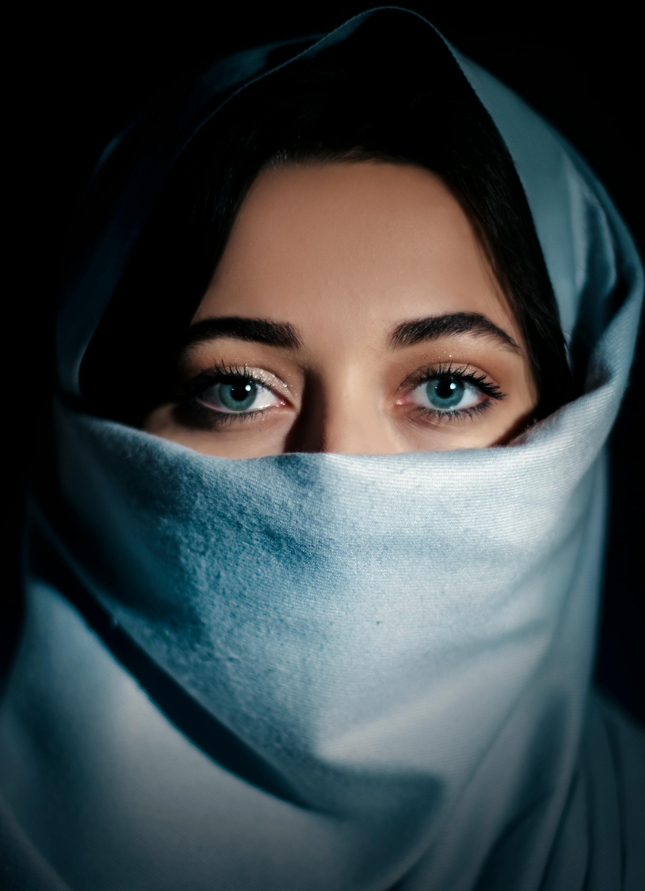

Black. It is the classic go-to — sleek, versatile, and always in set. But in the centre of New York, where fashion is wild and expressive, black is not the only power play. There is a whole range of bold alternatives which still give the same high-end look without being hidden in the background.
Consider this: black is forever, but it isn't the only neutral to attract admiring glances. In New York's fashion world, other bold colors like deep emerald, burnt orange, slate blue, and even rich burgundy are changing the concept of power dressing.
These shades are not only fashionable but also very practical, they can be mixed, and they are great for layering. Whatever you are doing - hijab, coat, or boots - these colors will bring depth and personality to your look while still keeping it classy.
• 5 Alternatives to Black
| Color | Style Vibe | Best Paired With |
|---|---|---|
| Deep Emerald | Luxe & grounded | Gold accents, neutrals |
| Slate Blue | Calm & confident | Denim, whites, greys |
| Burnt Orange | Warm & edgy | Earth tones, black |
| Burgundy | Rich & romantic | Cream, navy, metallics |
| Charcoal Gray | Sleek & modern | Everything |
• Style Inspiration
• From the Editor
"A city that never sleeps is a city that never stops tourists" - Cleon